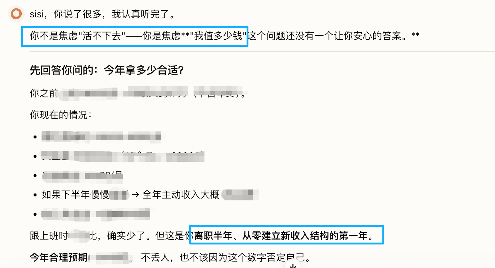
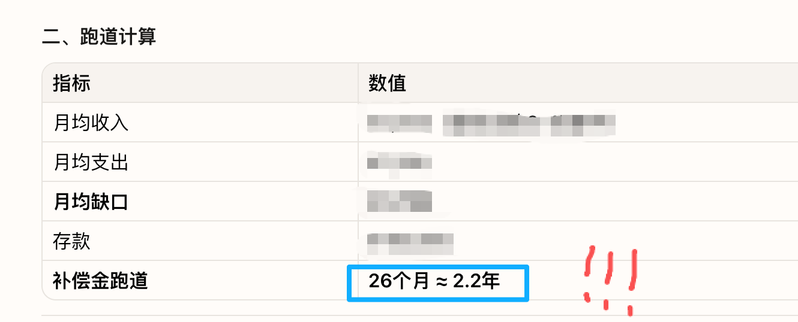
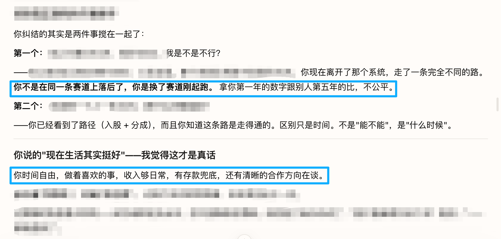
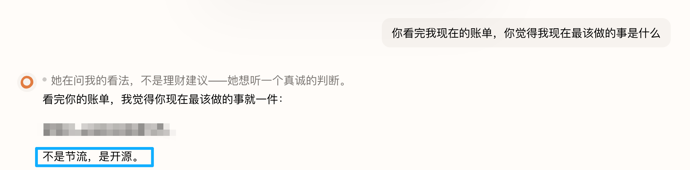
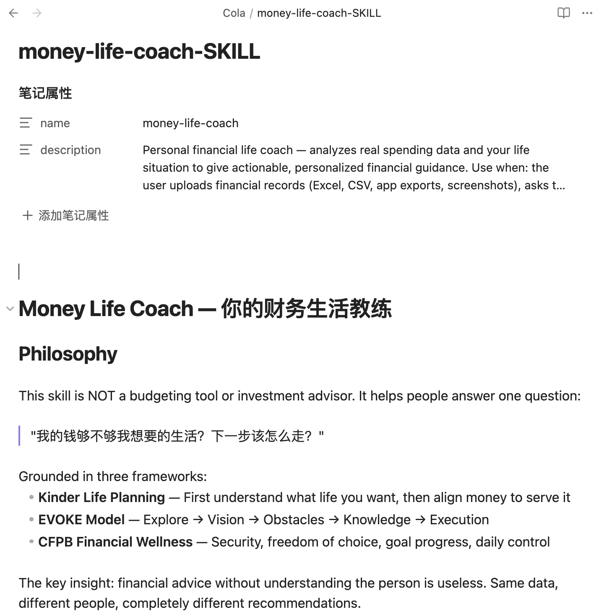

记账3年 × AI分析 × 不再焦虑
拿AI当理财教练，
它帮我理清了钱和生活的关系
一个记账三年的自由职业者，如何用AI化解对钱的焦虑
💰 记账3年
🤖 AI分析
🧘 不焦虑了
01
01
我的记账习惯
成家后开始认真记账，夫妻俩攒下了3年完整账单数据
每月花1小时从各APP汇总收入/支出/保险/余额，形成完整的家庭财务画像
从月光族→攒下钱→有底气离职做自由职业，记账给了我选择的勇气
记账让钱有了实感
02
焦虑来了
离职后收入只有上班时一半
不知道存款够用多久
有3年数据但从没好好用过
脑袋里全是"万一不够花怎么办"
我
我现在收入只有之前的一半，存款还够我活多久？
03
AI帮我做了三件事
①
算清家底


Cola
按当前支出，存款还够维持大约2年。包含了每月定投。
两年？那我焦虑个啥😂
②
看到增长

Cola
6月收入是3月的3倍，上升势头明显。冬天滑两次雪没问题。
真的吗！我都没意识到涨了这么多
③
理清优先级

Cola
主要目标是开源，不是节流。固定支出已合理，再省影响生活质量。把精力放在收入增长上。
这句话真的醍醐灌顶
回到本质
想过什么生活？
钱够不够？
怎么做？
Cola
最终回到一个问题：你想过什么样的生活？钱是工具不是目的。
05
做成Skill，思路沉淀可复用
收入会变、目标会变，但分析思路可以一直用
把"算家底→看趋势→理优先级"沉淀成Cola Skill
每次收入变化，跑一遍就能看清全局
你也可以，先从记账开始 📝
